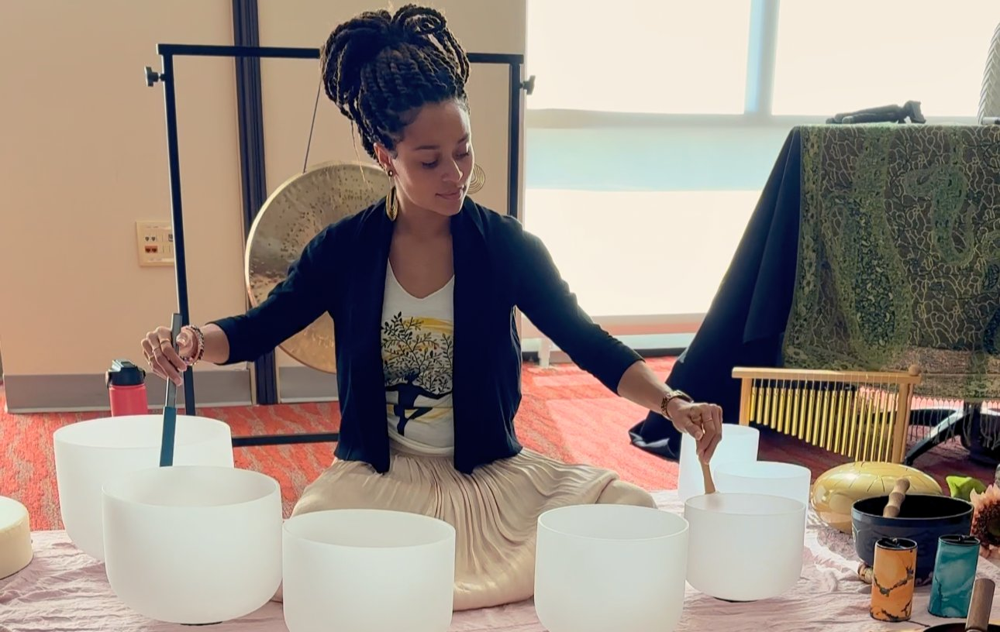

I'm not a meditation person. I've tried. I've sat on cushions, downloaded apps, lit candles, done the whole thing. My mind always wanders. I end up making grocery lists or replaying conversations from three years ago. So when a friend invited me to a sound bath at BATHE, I said yes mostly because I was curious about the space. I had already done the cold plunge there, and I was intrigued by the other offerings. The sound bath was in the evening, which meant I would be about 18 hours into my fast. I didn't think that mattered. I was wrong.
The room was small and dimly lit. About twelve people, all lying on mats with blankets and pillows. I chose a spot near the back, close to the door in case I needed to escape. The facilitator was a woman with long silver hair and a voice that seemed to vibrate at a frequency that made my chest feel warm. She told us to close our eyes and focus on our breath. I did. Nothing happened. My mind started wandering. Grocery list. That thing I said to my roommate. What I was going to eat tomorrow.
Then she started playing the bowls. Crystal singing bowls, different sizes, different pitches. The sound was unlike anything I had heard before. It wasn't just sound. It was vibration. I could feel it in my ribs, my jaw, my pelvic floor. It was like being inside a giant bell that was being rung very slowly. My mind stopped wandering. Not because I forced it to, but because there was nothing else to focus on. The sound was too all‑encompassing.
At around the ten‑minute mark, I started noticing things. My breathing had slowed without me trying. My hands felt warm even though the room was cool. My stomach, which had been rumbling quietly, was silent. It was like my body had shifted into a different state. I wasn't hungry. I wasn't tired. I was just present.
I think the fasting helped with that. When you're fasted, your body isn't using energy for digestion. That energy goes elsewhere. In my case, it seemed to go toward sensory processing. I was more aware of every nuance of the sound. The overtones, the way the bowls seemed to "sing" to each other. The silence between the notes was just as powerful as the notes themselves. I had never experienced silence that way before.
The facilitator moved through the room, playing different bowls near different people. When she came to me, the sound was so intense I felt it in my teeth. My whole skull was vibrating. I had a moment of panic, thinking it was too much. Then the feeling shifted into something else. Release. Like a knot in my chest that I didn't know was there just unraveled. I felt tears running down my face. I wasn't sad. I wasn't happy. I was just letting go of something I hadn't been holding.
Afterward, I talked to the facilitator. I asked her if fasting made a difference. She said yes, almost everyone who comes to a sound bath on an empty stomach has a stronger experience. She said it's because fasting quiets the digestive nervous system and allows the parasympathetic nervous system to take over. Your body is in a state of rest and repair. The sound vibrations can penetrate more deeply because your body is less dense with food and water.
I found that fascinating. I had heard about the benefits of fasting for physical health. Insulin sensitivity, autophagy, weight management. But this was something different. It was about energy. About vibration. About the way sound moves through an empty body differently than a full one.
The sound bath lasted about an hour. When it was over, I didn't want to move. I lay there for a few extra minutes, feeling the residual vibrations in my hands and feet. When I finally sat up, I felt like I had taken a nap that lasted three hours. My mind was clear, my body was relaxed, and my fast felt effortless. I wasn't hungry. I wasn't craving anything. I felt completely okay.
I've done sound baths since then, both fasted and fed. The fed ones are nice. The fasted ones are transformative. I'm not saying you need to fast for 18 hours to enjoy a sound bath. But if you're already fasting, it's worth trying to schedule your session during your fasting eating-window-planner. The experience is richer, deeper, and more emotionally releasing.
I also learned that sound baths are a form of somatic release. The vibrations activate the vagus nerve, which is the main highway of your parasympathetic nervous system. That's the system that calms you down. When you're fasted, your vagal tone is already higher because your body isn't working on digestion. The sound bath is like putting a turbocharger on an already efficient system.
Since that first session, I've gone back to BATHE several times. I've tried different facilitators, different bowl arrangements. The experience is always different, but the fasted ones are always more intense. I've cried, I've laughed, I've felt like I was floating. I've also felt uncomfortable and restless. That's part of it too. Not every session is blissful. But every session is revealing.
My roommate asked me what it felt like. I told her it's like the sound washes away all the noise in your head. She asked if that was the fast or the sound. I said both. The fast makes you quiet. The sound makes you empty. Together, they make space for something else.
She hasn't gone yet. She says she's not into "woo‑woo" stuff. But she's been asking more questions lately. I think she's curious. That's how it starts.
— Maya
P.S. I still make grocery lists during sound baths sometimes. But I also notice things I never noticed before. The temperature of the room. The weight of the blanket. The quiet after the last bowl stops ringing. That's the real meditation.